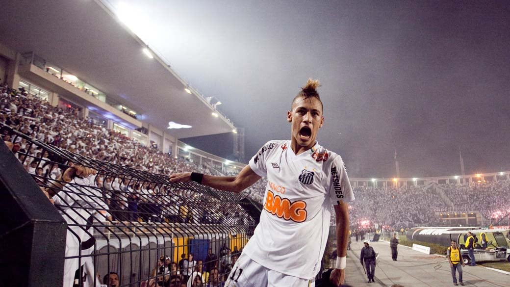
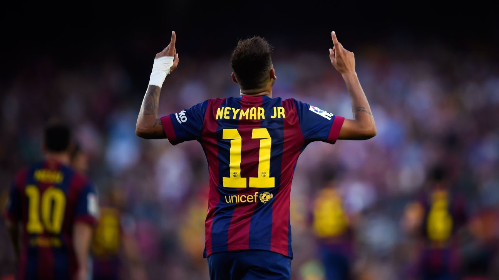
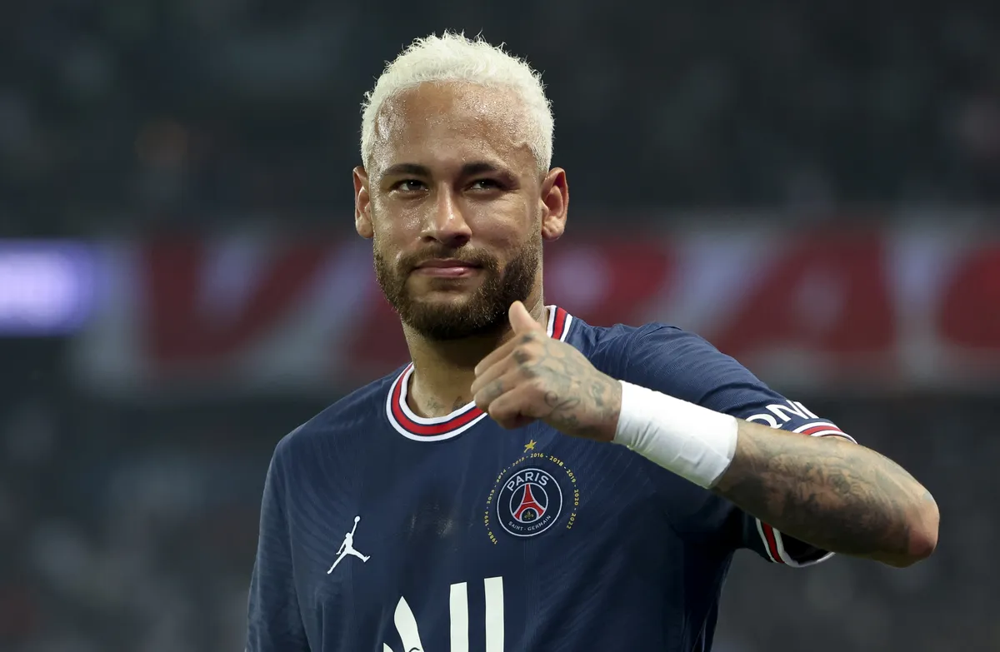
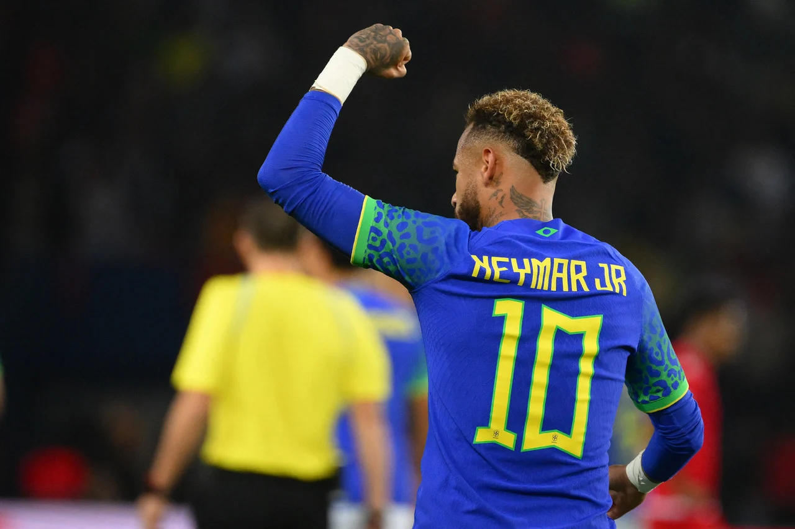

As Raízes em Mogi das Cruzes

Nascido em 5 de fevereiro de 1992, em Mogi das Cruzes, São Paulo, Neymar da Silva Santos Júnior já
demonstrava seu amor pelo futebol desde tenra idade. Nas ruas poeirentas de sua cidade natal, ele começou a
dar os primeiros chutes na bola, revelando um talento extraordinário que logo chamaria a atenção de todos ao
seu redor.
A Ascensão no Santos FC

Aos 11 anos, Neymar ingressou nas categorias de base do Santos FC, clube que viria a se tornar sua primeira
casa no mundo do futebol. Seu progresso foi meteórico, destacando-se nas categorias juvenis até finalmente
fazer sua estreia profissional pelo Santos em 2009, aos 17 anos. O menino que brincava nas ruas agora se
tornava uma estrela emergente nos gramados brasileiros.
A Magia em Barcelona

Em 2013, Neymar embarcou em uma nova e emocionante etapa de sua carreira ao assinar contrato com o Barcelona. Ao lado de lendas como Lionel Messi e Andrés Iniesta, ele conquistou títulos e corações ao redor do mundo com sua habilidade exuberante e jogadas geniais. A parceria formada com Messi e Luis Suárez, conhecida como "MSN", tornou-se sinônimo de espetáculo e conquistas.
O Desafio em Paris

Em 2017, Neymar seguiu para o Paris Saint-Germain (PSG), onde se tornou o jogador mais caro da história do futebol. Sua chegada à capital francesa foi marcada por expectativas astronômicas, e ele não decepcionou. Apesar dos desafios e lesões, Neymar continuou a brilhar nos campos europeus, conquistando troféus e deixando sua marca indelével na história do esporte.
Explorando Novos Horizontes no Al-Hilal
Em 2023, Neymar Jr. aceitou o desafio de se juntar ao Al-Hilal, no Oriente Médio, buscando novas experiências e oportunidades de crescimento. Sua chegada não apenas elevou o status do clube, mas também ampliou o alcance global do futebol árabe. Neymar abraçou o desafio com determinação, demonstrando sua capacidade de se adaptar e deixar sua marca em qualquer ambiente. Sua jornada no Al-Hilal promete adicionar um novo capítulo emocionante à sua carreira excepcional no futebol.
Legado e Além

Além de suas conquistas em clubes, Neymar também representa a seleção brasileira com distinção, buscando seguir os passos dos grandes ídolos do futebol brasileiro que o inspiraram na infância. Sua jornada é mais do que uma sequência de vitórias e recordes; é um testemunho do poder do talento, da dedicação e do espírito de superação.
Neymar Jr. continua a inspirar milhões em todo o mundo, não apenas como um jogador de futebol excepcional, mas também como um símbolo de perseverança e paixão pelo esporte. Sua história está longe de terminar, prometendo mais capítulos emocionantes e glórias futuras.